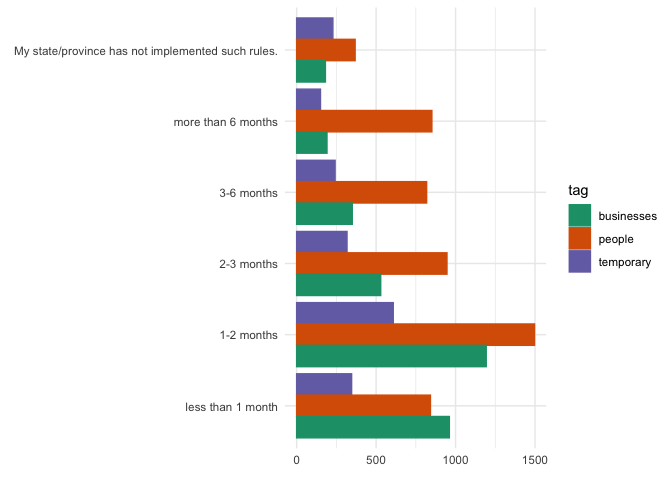

Uncertainty in times of COVID-19: Raw survey data
Fabian Lange, Lars Vilhuber
2020-05-03
Data from a survey of consumer expectations
Description
From April 24, 2020, Fabian Lange and Lars Vilhuber will conduct the survey “Uncertainty in COVID-19 times”. The survey is a single-question survey focusing on people’s anticipation about social distancing rules and firm closures during the 2020 COVID-19 health crisis.
We believe that this information is not otherwise available in a reliable and timely fashion. The information should be usable by policy-makers and researchers, to be included in models of future developments of society and the economy.
Citation
Please cite the data as
Lange, Fabian and Lars Vilhuber. 2020. “Uncertainty in times of COVID-19: Raw survey data [dataset].” Available at https://labordynamicsinstitute.github.io//covid19-expectations-data (accessed 2020-05-03).
Please cite this document as
Lange, Fabian and Lars Vilhuber. 2020. “Codebook for: Uncertainty in times of COVID-19: Raw survey data.” Available at https://labordynamicsinstitute.github.io//covid19-expectations-data (accessed 2020-05-03).
This document is also available in PDF format at https://labordynamicsinstitute.github.io//covid19-expectations-data/README.pdf.
We will be posting the data on Zenodo shortly. Data should be cite via DOI then.
Available data
Final files
Final files are uploaded after each wave is completed. Filenames in final tagged with geography, language, the question type,and date downloaded:
survey-[geography]-[language]-[question]-[date].xlsx
List of files
Temporary files
Temporary files may be made available if a survey has not yet completed, but data are already available.
Temporary files follow
survey-[surveyid].xlsx
Data description
| Topic | Answer |
|---|---|
| Geographic Coverage | United States of America, Canada |
| Time Periods | 2020-04-24 - 2020-05-03 |
| Date of Collection | 2020-04-24 - 2020-05-03 |
| Unit of Observation | Individual |
| Description of Variables | User ID, Time (UTC), Survey Completion, Publisher Category, Gender, Age, Geography, Weight, Question #1 Answer, rt_Q1_ms |
Reference period
The survey asks about point-in-time expectations. A new wave is launched every Friday. The list provides the dates of collection for each wave. Currently, data are available covering the period between 2020-04-24 and 2020-05-03.
Data Dictionary
Q1: Answer to primary question
This field will differ across the two types of files, geography, and languages. A consolidated (standardized) distribution is shown below, using the standardizer mapping.
Standardized distribution
The following tabulations are of unweighted data.

People, Canada, English
| Question #1 Answer | count | percent |
|---|---|---|
| 1-2 months | 511 | 25.68 |
| 2-3 months | 390 | 19.60 |
| 3-6 months | 313 | 15.73 |
| less than 1 month | 237 | 11.91 |
| more than 6 months | 353 | 17.74 |
| My province has not implemented such rules. | 186 | 9.35 |
Business, Canada, French
| Question #1 Answer | count | percent |
|---|---|---|
| 1-2 mois | 277 | 30.64 |
| 2-3 mois | 250 | 27.65 |
| 3-6 mois | 201 | 22.23 |
| Les entreprises dans ma province ne sont pas fermées | 17 | 1.88 |
| moins d’un mois | 104 | 11.50 |
| plus que 6 mois | 55 | 6.08 |
People, Canada, French
| Question #1 Answer | count | percent |
|---|---|---|
| 1-2 mois | 175 | 21.06 |
| 2-3 mois | 212 | 25.51 |
| 3-6 mois | 230 | 27.68 |
| Ma province n’a pas de telles mesures | 8 | 0.96 |
| moins d’un mois | 27 | 3.25 |
| plus que 6 mois | 179 | 21.54 |
Business, US, English
| Question #1 Answer | count | percent |
|---|---|---|
| 1-2 months | 916 | 36.63 |
| 2-3 months | 279 | 11.16 |
| 3-6 months | 149 | 5.96 |
| less than 1 month | 857 | 34.27 |
| more than 6 months | 136 | 5.44 |
| My state has not implemented such rules. | 164 | 6.56 |
People, US, English
| Question #1 Answer | count | percent |
|---|---|---|
| 1-2 months | 811 | 32.43 |
| 2-3 months | 344 | 13.75 |
| 3-6 months | 275 | 11.00 |
| less than 1 month | 578 | 23.11 |
| more than 6 months | 319 | 12.75 |
| My state has not implemented such rules. | 174 | 6.96 |
Age
| Age | count | percent |
|---|---|---|
| 18-24 | 1329 | 12.52 |
| 25-34 | 1669 | 15.72 |
| 35-44 | 1463 | 13.78 |
| 45-54 | 1250 | 11.77 |
| 55-64 | 1309 | 12.33 |
| 65+ | 1122 | 10.57 |
| Unknown | 2476 | 23.32 |
Gender
| Gender | count | percent |
|---|---|---|
| Female | 3859 | 36.34 |
| Male | 4411 | 41.54 |
| Unknown | 2348 | 22.11 |
Geography
Geography is as coded by Google Surveys. Precision may vary, having country, region, province, and sometimes city.
Distribution across countries
Regions
Regions may be single states or provinces, or larger collections.
States/Provinces
Cities
In some cases, details is available at the city level.
Detailed geography
Weight
See elsewhere in this document how weights are computed.
Response Time
Publisher Category
Not tabulated
User IDTime (UTC)Survey Completion
Data structure
Data files are available for each completed cycle of the survey, in general once a week, and are stored under final. Data from the preliminary study (assessing the questionnaire design) is stored under preliminary. We may make available data before the survey is completed for each cycle, under temporary, however, once the final version from that cycle is available, these are deleted (this directory will be empty on Zenodo).
Data format
Native format is Excel (XLSX).
Files are provided as downloaded from Google Surveys. Each file has 4 tabs.
Overview
Lists the questions asked by the client, in this case Lange and Vilhuber, as well as a survey ID.
Topline
This tab contains a weighted summary of the responses to the questions (similar to the above summary).
Complete responses
This tab contains the actual microdata for any complete responses. Note that for a single-question survey, this is identical to the “All responses”. A complete response might have a weight of zero.
All responses
All responses, whether complete or not, are recorded on this tab. In the case of a single-question survey, this is identical to the “Complete responses” tab.
Data sources and methodology
Target population
- All Canadians aged 18 and older from the ten provinces and three territories are eligible to participate.
- All US residents aged 18 and older are eligible to participate.
Instrument design
Each individual is asked one of two questions: how long they expect “social distancing rules” or “business closures” to remain in effect:
- How much longer do you expect social distancing rules (restrictions on gatherings, stay-at-home rules) to stay in place in your province/state?
- How much longer do you expect the closure of non-essential businesses to stay in place in your province/state?
Five response choices are offered:
- “less than 1 month”,
- “1-2 months”,
- “2-3 months”,
- “3-6 months”,
- “more than 6 months”.
An additional answer allows respondents to affirm that “such measures are not implemented in their province/state”. See questionnaires for visual representation of the questions.
Questionnaires


Data collection
Data is collected via Google Surveys. For English-language surveys, data is collected via a web form. For French-language surveys, the Android Google Survey app is used, as web-collection in French is not possible via Google Surveys. See Sostek and Slatkin (2018) and Google (2020) for more details.
Sampling
Google Surveys is an online non-probability survey. It uses stratified sampling for collection, based (in the US) on the target internet population from the 2017 Current Population Survey (CPS) Computer and Internet Use Supplement (Sostek and Slatkin 2018; Google 2020).
Data are collected directly from survey respondents.
For each country, we plan to collect 2500 responses per question, per week. For Canada, a French-language variant is fielded. In order to determine the split, we use Statistics Canada statistics on “Languag e spoken most often at home” by other language(s) spoken regularly at home and age" (Statistics Canada 2017),1 combining responses for “French” and “French and non-official language” (i.e., no English mentioned).
For 2016, 20.4% spoke French and no English as the language spoken most often at home. We thus target 510 responses via the French-language questionnaire, and 1990 in English.
Imputation
All demographics are imputed by Google Surveys, if collected via web. Demographics for respondents via the app are collected through the app.
Quality evaluation
A preliminary survey was conducted to allow for choice of either a two-question variant, or a one-question variant that incluced both social distancing and business closures (“How much longer do you expect social distancing rules (restrictions on gatherings, closure of non-essential businesses, stay-at-home rules) to stay in place in your province?”). See “Uncertainty in times of COVID-19: Choosing whether to ask 1 or 2 questions” for more information.
Privacy and disclosure control
Privacy and disclosure control are described in Google (2020). For most respondents, no direct or indirect identifiers are collected, and are imputed based on other information available to Google, but not the sponsors of the survey.
Response rates
The specific response rates are not known. Google (2020) reports response rates in general for this type of data collection.
License
These data are licensed under a Creative Commons Attribution-NonCommercial 4.0 International license. See citation for attribution.
References
Google. 2020. “Methodology Google Surveys.” https://support.google.com/surveys/answer/6189786.
Sostek, Katrina, and Brett Slatkin. 2018. “How Google Surveys Works.” Whitepaper. Google. https://services.google.com/fh/files/misc/white_paper_how_google_surveys_works.pdf.
Statistics Canada. 2017. “Language Highlight Tables, 2016 Census.” Catalogue 98-402-X2016005. Statistics Canada. https://www12.statcan.gc.ca/census-recensement/2016/dp-pd/hlt-fst/lang/Table.cfm?Lang=E&T=31&Geo=00.